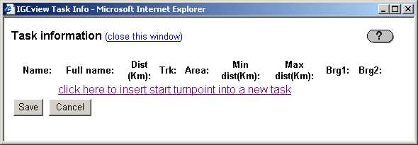
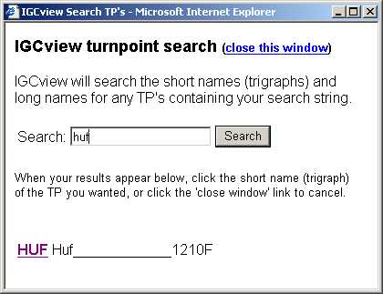
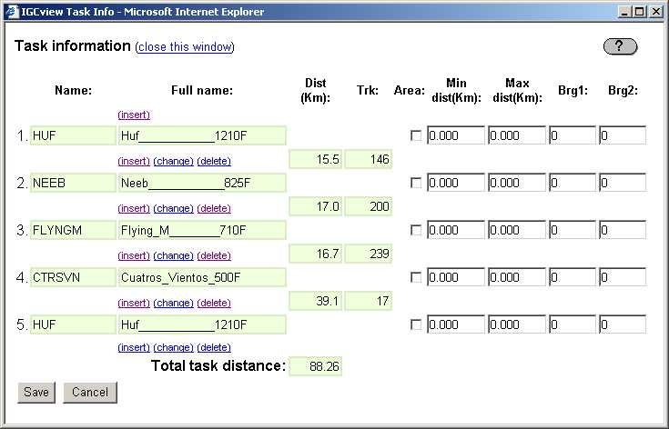
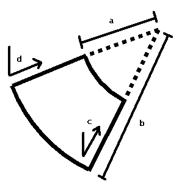
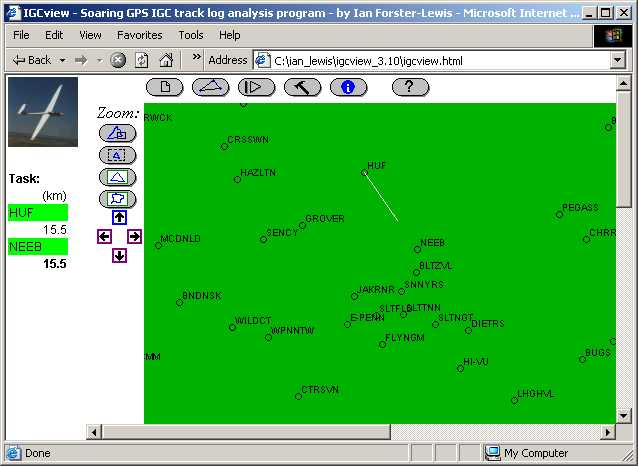
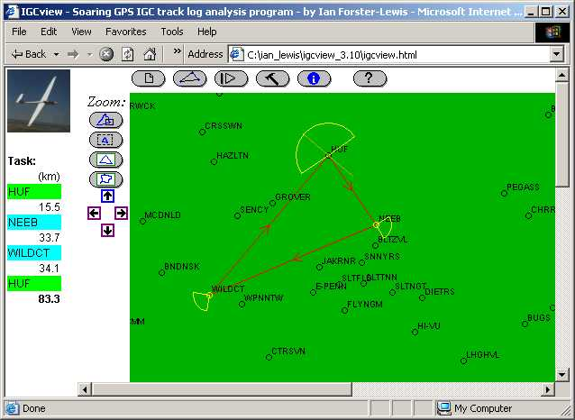
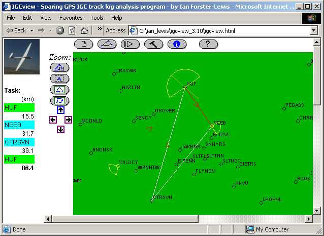
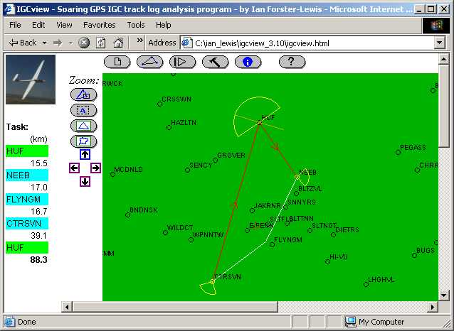
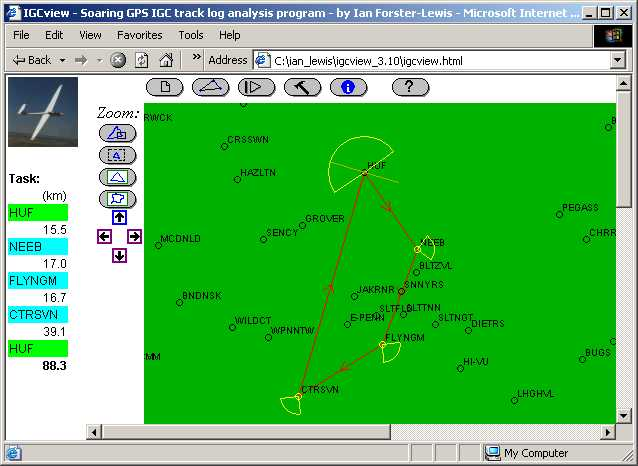

|
Task data.
If you have currently have no task defined, the 'task information window' will be mostly
empty (except for the headings), as shown below.

To build a task, click the 'insert' link, and you will be prompted to 'search' for a new turnpoint,
as shown in the picture below.

After clicking the 'HUF' link, that turnpoint will be added as a startpoint for the task. Similarly,
additional turnpoints (in this example NEEB, FLYNGM, CTRSVN and finally HUF again) can be 'inserted' into the
task, and the task window will look like the picture below.

To define area turnpoints, the additional fields are used as follows:
|  |
- Min dist (a). Minimum distance. To be in the defined area you must be further
from the TP than this minimum distance.
- Max dist (b). Maximum distance. To be in the defined area you must be no further
from the TP than this maximum distance.
- Brg1 (d). Bearing 1. To be in the defined area your bearing to the TP must be
between bearing1 and bearing2. IGCview defines the area as being anticlockwise (with
respect to the TP, from bearing1 to bearing2.
- Brg2 (c). Bearing 2. See bearing1.
In the USA, home of the practical, all areas are defined as being circular, in which case
Min Dist, Brg1 and Brg2 should all
be zero, and Max Dist is the area radius.
|
Click the 'save' button and you've completed the definition of the new task.
The task can also be drawn directly on the map, by following the instructions below.
|
 |
Draw Task. Here's a sample walk-through defining and altering a task.
- The first leg. Click the button, then click your start
point on the map and drag towards the next turnpoint on the task. In the
example below our start turnpoint is HUF and we're dragging towards NEEB. Note that
the task TP's and distances will update on the left side of the page
as you drag the mouse:

When you've dragged the mouse over to NEEB, release the mouse button, and a task
HUF - NEEB will be drawn.
If you click on any turnpoint in the task, the task info window will open, as by
clicking the button as described above.
If you drag the mouse from a task turnpoint, that corner of the task will be dragged to
a new TP, or if you drag the last TP in the task, then the task will be extended to a new TP.
- Adding further legs. The full task (HUF - NEEB - WILDCT - HUF) has been defined by
clicking and dragging from
HUF to NEEB, then clicking on NEEB and dragging to WILDCT, then WILDCT to HUF. The
task summary on the left side of the page has updated to show a total task length of
83.3 km:

- Changing a turnpoint. To change the WILDCT turnpoint on the task to CTRSVN,
click and drag the corner of the task at WILDCT over to the CTRSVN turnpoint on the map.
IGCview will 'snap' to the nearest turnpoint when you release the mouse
button. (To do: I'll add a button on the task menu that will allow you to drag to any
lat/long and create a new turnpoint when you release the mouse.):

- Inserting and deleting turnpoints. The center point of each task leg (show by
the little arrow at the leg midpoint) is draggable just like the real turnpoints on each
corner of the task. To insert FLYNGM as a new turnpoint between the NEED and CTRSVN
turnpoints on the
task, drag the midpoint arrow of the first leg over to the FLYNGM turnpoint on the map.
To delete a turnpoint in the task, drag that corner of the task to the preceding or following
turnpoint in the task, e.g. to delete FLYNGM, you could drag it to either NEEB or CTRSVN.

- The final task looks like this. You will get a printable task summary by clicking
the button.

|
 IGCview Task Help
(close this window)
IGCview Task Help
(close this window) or task data
.
or task data
.